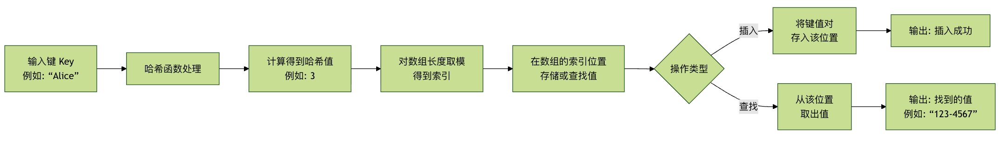

ハッシュテーブル
ハッシュテーブル（Hash Table）は、別名ハッシュ表とも呼ばれ、非常に効率的なデータ構造です。
ハッシュテーブルは平均的な場合、ほぼO(1)の時間計算量でデータの挿入・削除・検索を行うことができ、これは配列の走査（O(n)）や二分探索木の探索（O(log n)）よりもはるかに高速です。
| 操作 | 配列/連結リスト | ハッシュテーブル |
|---|---|---|
| 検索 | O(n) | O(1) |
| 挿入 | O(n) | O(1) |
| 削除 | O(n) | O(1) |
| 空間効率 | 高 | 中程度 |
ハッシュテーブルちょうどスマートなロッカーシステムのようなものです：
- 従来のロッカー：どのロッカーに何を入れたかを覚えておく必要があります（線形探索）
- スマートロッカー：管理者に品物の名前を伝えると、管理者は直接ロッカー番号を教えてくれます（ハッシュ探索）
核となる考え方：
〜を通じてハッシュ関数将キー（Key）を変換して配列インデックスにし、高速アクセスを実現します。
日常生活の例：
- 辞書で単語を引く：単語の頭文字に基づいて素早くページを特定する
- 電話帳：姓のピンイン順に並べ、連絡先を素早く見つける
- 図書館の請求記号：分類番号に基づいて直接書架の場所を見つける
想像してみてください。あなたは巨大な図書館を持っていて、そこには何千冊もの本があります。
特定の本、例えば『ハリー・ポッター』を探したい場合、どうしますか？最も愚かな方法は、最初の書架の最初の本から始めて、見つかるまで一冊ずつ探すことです。それは数時間から数日かかるかもしれません！
賢い図書館員はどうするでしょうか？彼らはあるものを使います。索引システム：書名や著者名の何らかのルール（例えば頭文字）に基づいて、本がある大まかなエリアを素早く特定し、その小さなエリア内で探すだけで済みます。この索引システムの考え方こそが、ハッシュテーブルの中核なのです。
基本概念
ハッシュテーブルとは？
ハッシュテーブルとは、キー（Key）を使って値（Value）に直接アクセスするデータ構造です、それは「ハッシュ関数」と呼ばれる魔法の公式を利用し、任意のサイズのキー（例えば文字列、数値、オブジェクト）を固定サイズの数値に変換します。この数値は、ハッシュ値或（ハッシュコード）と呼ばれます。次に、このハッシュ値を配列のインデックスとして使用し、そのインデックスに対応する配列の位置に値を格納します。
このプロセスは、各キーに一意の座席番号（ハッシュ値）を割り当て、こう伝えるようなものです。「あなたのデータはこの番号の座席に置かれています」。このデータを探したいときは、同じルールでもう一度座席番号を計算すれば、直接そこへ行って取得できます。一つひとつの座席に尋ねる必要はありません。
中核コンポーネント
ハッシュテーブルは主に以下の3つの中核部分から構成されます：
- キー（Key）： データを保存・検索するときに使用する識別子です。例えば電話帳では、人名がキーです。
- 値（Value）： キーに関連付けられた実際のデータです。電話帳では、電話番号が値です。
- ハッシュ関数（Hash Function）： キーを配列インデックスにマッピングする数学的な関数です。これはハッシュテーブルの心臓部です。
動作原理の図解
簡単な例で説明しましょう。人名を電話番号にマッピングする電話帳を作成するとします。

上の図はハッシュテーブルの動作フローを明確に示しています。挿入も検索も、まずキーから始まり、ハッシュ関数でインデックスを計算し、配列のその位置に対して直接操作を行います。これにより高速アクセスを実現しています。
ハッシュ関数の設計
優れたハッシュ関数の特性
| 特性 | 説明 | 重要度 |
|---|---|---|
| 決定性 | 同じ入力に対して常に同じ出力を生成する | ⭐⭐⭐⭐⭐ |
| 均一分布 | 出力がハッシュテーブルの範囲内で均一に分布する | ⭐⭐⭐⭐⭐ |
| 効率的な計算 | 計算プロセスが単純で高速 | ⭐⭐⭐⭐ |
| 雪崩効果 | 入力のわずかな変化が出力の大きな変化を引き起こす | ⭐⭐⭐ |
一般的なハッシュ関数
| 種類 | 例 | 適用シナリオ |
|---|---|---|
| 除算剰余法 | hash = key % table_size |
整数キー |
| 乗算ハッシュ法 | hash = floor(key * A % 1 * table_size) |
浮動小数点数キー |
| 数字分析法 | 数字の分布の規則性を分析する | 特定パターンのデータ |
| 平方中位法 | hash = (key * key) // 10^(n/2) % table_size |
数値キー |
| 文字列ハッシュ | 文字ごとに処理する | 文字列キー |
衝突の解決方法
チェイン法（Separate Chaining）
| 特性 | 説明 | 時間計算量 |
|---|---|---|
| 原理 | 各ハッシュバケットがリンクリストを保持する | |
| 挿入 | 対応するリンクリストの先頭に追加する | O(1) |
| 検索 | 対応するリンクリスト内を検索する | O(k)、kはリンクリストの長さ |
| 削除 | 対応するリンクリスト内で削除する | O(k) |
| 空間コスト | 追加のポインタ格納が必要 | 大きい |
オープンアドレス法（Open Addressing）
| 種類 | プローブ系列 | 利点 | 欠点 |
|---|---|---|---|
| 線形プロービング | h, h+1, h+2, ... |
単純で実装が容易 | 集積（クラスタリング）が発生しやすい |
| 二次プロービング | h, h+1², h+2², ... |
クラスタリングを軽減する | すべての位置をプローブできない可能性がある |
| ダブルハッシュ | h, h+hash2(key), h+2*hash2(key), ... |
分布が均一 | 計算が複雑 |
ハッシュテーブルの構造図

衝突解決方法の比較

ハッシュ関数を深く理解する
ハッシュ関数はハッシュテーブルの効率性の鍵です。優れたハッシュ関数には以下の特徴が必要です：
- 決定性： 同じキーは常に同じハッシュ値を生成しなければなりません。
- 効率性： 計算速度が速くなければなりません。
- 均一分布： 異なるキーを可能な限り均一に配列全体の空間にマッピングし、衝突を減らせること。
簡単なハッシュ関数の例
キーが文字列で、配列の長さが10だとします。簡単なハッシュ関数は、文字列内の各文字のASCIIコードを合計し、配列の長さで剰余を取るものです。
例
"""
簡単な文字列ハッシュ関数です。
:param key: 入力されたキー（文字列）
:param array_size: ハッシュテーブル配列のサイズ
:return: 計算された配列インデックス
"""
total = 0
for char in key:
# 文字をASCIIコード値に変換して累計する
total += ord(char)
# 配列サイズで剰余を求め、インデックスが配列範囲内にあることを保証する
return total % array_size
# ハッシュ関数をテストする
keys_to_test = ["Alice", "Bob", "Charlie", "David"]
array_size = 10
print(簡単なハッシュ関数のテスト結果：)
for key in keys_to_test:
hash_index = simple_hash(key, array_size)
print(fキー '{key}' -> ハッシュインデックス: {hash_index})
出力結果：
简单哈希函数测试结果： 键 'Alice' -> 哈希索引: 0 键 'Bob' -> 哈希索引: 8 键 'Charlie' -> 哈希索引: 5 键 'David' -> 哈希索引: 3
この関数は非常に簡単ですが、最良とは言えないかもしれません。異なる文字列が同じ合計を生じる可能性があるためです（例えば ab と ba）。その結果、ハッシュ衝突。
ハッシュ衝突とその解決方法
ハッシュ衝突2つ以上の異なるキーが、ハッシュ関数による計算後に同じ配列インデックスを得ることを指します。映画館で2人の観客が同じ座席番号を割り当てられるようなもので、明らかに問題です。衝突は避けられません。なぜなら、ハッシュ値の範囲（配列サイズ）は通常有限ですが、可能なキーは無限だからです。
衝突を解決する古典的な方法は主に2つあります：
方法1：チェイン法
これは最も一般的な方法です。データを配列の各位置に直接置くのではなく、各配列位置に次のものを格納します。リンクリスト（または赤黒木などの他のデータ構造）。衝突が発生すると、新しいキーと値のペアはこの位置のリンクリストに追加されます。
プロセスの説明：
キーのハッシュ値を計算し、配列インデックスを見つけます。
リンクリストが空でない場合（衝突が発生した場合）、このリンクリストを走査します。
- 同じキーが見つかった場合は、その値を更新します（または要件に応じて処理します）。
- 同じキーが見つからない場合は、新しいキーと値のペアをリンクリストの末尾に追加します。
例
"""チェイン法で衝突を解決するハッシュテーブルの実装。"""
def __init__(self, size=10):
"""ハッシュテーブルを初期化します。
:param size: 基盤となる配列の初期サイズ
"""
self.size = size
# サイズ `size` のリストを作成し、各要素を空リスト（リンクリストを表す）に初期化します
self.table = [[] for _ in range(size)]
def _hash(self, key):
"""内部ハッシュ関数。ここではPython組み込みのhash関数を使用して剰余を取ります。"""
return hash(key) % self.size
def insert(self, key, value):
"""ハッシュテーブルにキーと値のペアを挿入します。"""
index = self._hash(key)
bucket = self.table[index] # そのインデックスに対応する「バケット」（リンクリスト）を取得
# バケットを走査し、キーが既に存在するか確認
for i, (k, v) in enumerate(bucket):
if k == key:
# キーが存在する場合は、値を更新
bucket[i] = (key, value)
return
# キーが存在しない場合は、リンクリストの末尾に追加
bucket.append((key, value))
def get(self, key):
"""キーに基づいて値を取得します。キーが存在しない場合はNoneを返します。"""
index = self._hash(key)
bucket = self.table[index]
for k, v in bucket:
if k == key:
return v
return None # キーが存在しない
def delete(self, key):
"""キーに基づいてキーと値のペアを削除します。"""
index = self._hash(key)
bucket = self.table[index]
for i, (k, v) in enumerate(bucket):
if k == key:
del bucket[i] # リンクリストからそのノードを削除
return True # 削除成功
return False # キーが存在しないため、削除失敗
def display(self):
"""ハッシュテーブルのすべての内容を出力します。"""
for i, bucket in enumerate(self.table):
print(fインデックス {i}: {bucket})
# 使用例
print("\n--- チェイン法ハッシュテーブルの例 ---)
phone_book = HashTableChaining(5)
phone_book.insert("Alice", "123-4567")
phone_book.insert("Bob", "987-6543")
phone_book.insert("Charlie", "555-1234")
# デモのため、"David"のハッシュ値が"Alice"と衝突すると仮定
phone_book.insert("David", "111-2222")
print(データ挿入後のハッシュテーブル：)
phone_book.display()
print(f"\n'Bob' の電話番号を検索: {phone_book.get('Bob')})
print(f存在しない 'Eve' を検索: {phone_book.get('Eve')})
phone_book.delete("Charlie")
print("\n'Charlie' 削除後のハッシュテーブル：)
phone_book.display()
出力結果：
--- 链地址法哈希表示例 ---
插入数据后的哈希表：
索引 0: [('David', '111-2222')]
索引 1: []
索引 2: [('Alice', '123-4567')]
索引 3: [('Charlie', '555-1234')]
索引 4: [('Bob', '987-6543')]
查找 'Bob' 的电话: 987-6543
查找不存在的 'Eve': None
删除 'Charlie' 后的哈希表：
索引 0: [('David', '111-2222')]
索引 1: []
索引 2: [('Alice', '123-4567')]
索引 3: []
索引 4: [('Bob', '987-6543')]
注意： 衝突を明確に示すため、例では配列サイズを5に設定しています。
hash(key)実際の衝突は明らかでないかもしれません。simple_hash関数の下では、"Alice"和"David"同じインデックスが生成される可能性があり、それによってチェイン法が1つのインデックスに複数のエントリを格納する方法を示します。
方法2：オープンアドレス法
この方法では、すべての要素を配列自体に格納します。衝突が発生すると、何らかの探索列（Probing Sequence）に従って、配列内で次に空いている位置を探します。
一般的な探索方法：
- 線形探索： 位置が
i占有されている場合は、i+1,i+2,i+3... 空きが見つかるまで試行します。 - 二次探索： 位置が
i占有されている場合は、i+1^2,i+2^2,i+3^2...。 - 二重ハッシュ： 2番目のハッシュ関数を使用して探索のステップ幅を計算します。
ここでは簡単な線形探索を実装します：
例
"""線形探索によるオープンアドレス法で衝突を解決するハッシュテーブルの実装。"""
def __init__(self, size=10):
self.size = size
# 空きスロットを表す特別なマーカー `None` と、削除済みの位置を表すマーカー（例：`'DELETED'`）を使用します
# 簡略化のため、ここでは `None` のみを空きスロットとして使用し、検索時に `None` に遭遇したら停止します
self.keys = [None] * size
self.values = [None] * size
def _hash(self, key):
return hash(key) % self.size
def insert(self, key, value):
index = self._hash(key)
original_index = index
# 線形探索で空きスロットまたは同じキーを探します
while self.keys[index] is not None:
if self.keys[index] == key:
# キーが存在する場合は、値を更新
self.values[index] = value
return
index = (index + 1) % self.size # 次の位置に移動します（配列を循環）
if index == original_index:
# 一周回って見つからず、テーブルは満杯です（実際のアプリケーションでは拡張すべき）
raise Exception(ハッシュテーブルは満杯です)
# 空きスロットを見つけて挿入
self.keys[index] = key
self.values[index] = value
def get(self, key):
index = self._hash(key)
original_index = index
while self.keys[index] is not None:
if self.keys[index] == key:
return self.values[index]
index = (index + 1) % self.size
if index == original_index:
break # 一周探しても見つからない
return None
def display(self):
for i in range(self.size):
if self.keys[i] is not None:
print(fインデックス {i}: キー={self.keys[i]}, 値={self.values[i]})
else:
print(fインデックス {i}: 空)
# 使用例
print("\n--- 線形探索ハッシュテーブルの例 ---)
ht_linear = HashTableLinearProbing(7) # 小さなサイズで探索を観察しやすくする
ht_linear.insert("Apple", 10)
ht_linear.insert("Banana", 20)
ht_linear.insert("Cherry", 30)
# "Date"と"Apple"のハッシュが衝突すると仮定
ht_linear.insert("Date", 40)
print(データ挿入後のハッシュテーブル：)
ht_linear.display()
print(f"\n'Banana' を検索: {ht_linear.get('Banana')})
print(f'Date' を検索（衝突後に挿入）: {ht_linear.get('Date')})
出力結果：
--- 线性探测哈希表示例 --- 插入数据后的哈希表： 索引 0: 键=Apple, 值=10 索引 1: 键=Date, 值=40 索引 2: 键=Banana, 值=20 索引 3: 键=Cherry, 值=30 索引 4: 空 索引 5: 空 索引 6: 空 查找 'Banana': 20 查找 'Date' (冲突后插入的): 40
注意： オープンアドレス法では、削除操作は厄介で、単純に位置を空にすることはできません
None、そうしないと探索列を壊してしまいます。通常は特別な「削除済み」マーカーを使用します。この例では簡略化のため削除を実装していません。
2つの方法の比較
| 特性 | チェイン法 | オープンアドレス法 |
|---|---|---|
| 実装の難易度 | 比較的簡単 | 比較的複雑、特に削除操作 |
| 空間オーバーヘッド | ポインタ（リンクリスト）を格納するための追加スペースが必要 | すべてのデータが配列内にあるため、空間利用率が高くなる可能性がある |
| 衝突の影響 | 衝突は同じバケット（リンクリスト）のパフォーマンスにのみ影響する | 衝突は後続の挿入位置に影響し、「クラスタリング」現象を引き起こす可能性がある |
| 拡張のタイミング | 平均リンクリスト長がしきい値を超えたときに拡張する | 負荷係数（要素数/配列サイズ）がしきい値を超えたときに拡張する |
| 適用シーン | 汎用的で、より一般的 | キャッシュに優しく、最大データ量が既知であるか、メモリが限られているシーンに適している |
ハッシュテーブルの性能と負荷係数（ロードファクター）
ハッシュテーブルの効率は重要な指標に大きく依存します：負荷係数。
負荷係数 = ハッシュテーブルに格納されている要素数 / ハッシュテーブル配列の総サイズ
- 負荷係数が低い（例：0.5）：配列にはまだ多くの空きがあり、衝突の確率が小さく、操作が高速であることを意味します。
- 負荷係数が高い（例：0.9）：配列がほぼ満杯で、衝突の確率が急激に増加し、リンクリストが長くなるか探索距離が長くなり、パフォーマンスが低下することを意味します。
高性能を維持するため、負荷係数が特定のしきい値（例：0.75）を超えると、ハッシュテーブルは拡張操作：
- 新しい、より大きな配列（通常は元のサイズの2倍）を作成します。
- 古いハッシュテーブル内のすべてのキーと値のペアを走査します。
- 新しい配列サイズに基づいて、ハッシュ関数を使用して各キーのインデックスを再計算し、新しい配列に挿入します。
このプロセスは再ハッシュと呼ばれRehashing、時間はかかりますが、負荷係数を大幅に低下させ、ハッシュテーブルを再び効率的にします。
実践演習：単語カウンターを作成する
自作のチェイン法ハッシュテーブルを使って実際の問題を解決しましょう：テキスト内の各単語の出現回数を数えます。
テストデータとして次のテキストを使用します（コードにコピーできます）：
the quick brown fox jumps over the lazy dog the dog is not lazy at all
例
print("\n=== 実践演習：単語カウンター ===)
# 1. ハッシュテーブルのインスタンスを作成
word_counter = HashTableChaining(size=10)
# 2. 提供されたテストテキスト
text = "the quick brown fox jumps over the lazy dog the dog is not lazy at all"
words = text.split() # テキストを単語リストに分割する
print(処理する単語リスト：, words)
# 3. 単語を走査してハッシュテーブルに挿入する
for word in words:
current_count = word_counter.get(word)
if current_count is None:
# 単語が最初に出現した場合、カウントを1に設定
word_counter.insert(word, 1)
else:
# 単語が既に存在する場合、カウントを1増やす
word_counter.insert(word, current_count + 1)
# 4. 集計結果を出力
print("\n単語の出現回数統計：)
# 注意：displayメソッドはインデックスごとに出力するため、ここではより見やすい出力を書きます
all_entries = []
for bucket in word_counter.table:
all_entries.extend(bucket) # すべてのバケット内のエントリを結合する
for word, count in all_entries:
print(f'{word}': {count} 回)
# 5. 特定の単語を検証する
test_word = "the"
print(f"\n検証：単語 '{test_word}' は {word_counter.get(test_word)} 回出現しました。)
test_word = "lazy"
print(f検証：単語 '{test_word}' は {word_counter.get(test_word)} 回出現しました。)
出力結果：
=== 实践练习：单词计数器 === 处理的单词列表: ['the', 'quick', 'brown', 'fox', 'jumps', 'over', 'the', 'lazy', 'dog', 'the', 'dog', 'is', 'not', 'lazy', 'at', 'all'] 单词出现次数统计： 'the': 3 次 'quick': 1 次 'brown': 1 次 'fox': 1 次 'jumps': 1 次 'over': 1 次 'lazy': 2 次 'dog': 2 次 'is': 1 次 'not': 1 次 'at': 1 次 'all': 1 次 验证：单词 'the' 出现了 3 次。 验证：单词 'lazy' 出现了 2 次。
おめでとうございます！あなたは自分で実装したハッシュテーブルを使用して、実用的なタスクを正常に完了しました。実際のプログラミングでは、自分でハッシュテーブルを実装する必要はほとんどありません。現代のプログラミング言語（Python のdict、Java のHashMap、C++ のunordered_map）はすべて、高度に最適化され、強力な組み込みハッシュテーブル実装を提供しています。その原理を理解することで、より賢く、より効率的にそれらを使用できるようになります。
まとめと重要ポイントの振り返り
ハッシュテーブルとは： キーを介して値に直接アクセスする効率的なデータ構造であり、平均時間計算量はO(1)。
核心メカニズム： ハッシュ関数キーを配列インデックスに変換します。
重要な課題： ハッシュ衝突——異なるキーが同じインデックスにマッピングされること。
解決策：
- チェイン法（連鎖アドレス法）： 各インデックス位置にリンクリストを格納し、衝突したキーと値のペアを保存します。
- オープンアドレス法： 配列内で探索シーケンスに従って次の空き位置を探します。
パフォーマンスの鍵： 負荷係数。負荷係数が高すぎる場合は、拡張和再ハッシュによってパフォーマンスを回復する必要があります。
実際の応用： ハッシュテーブルはプログラミングの基盤であり、データベースインデックス、キャッシュシステム、集合メンバーシップチェック、オブジェクト属性の保存など、数え切れないほどのシーンで広く使用されています。
その他の拡張
クリックしてノートを共有
<p style="font-size:14px;">ノートはこの記事の内容の拡張である必要があります！</p><br> <p style="font-size:12px;"><a href="../tougao.html" target="_blank">記事投稿は、ここをクリック</a></p> <p style="font-size:14px;"><a href="../w3cnote/runoob-user-test-intro.html" target="_blank">登録招待コードの取得方法</a></p> <h3 class="text-muted"><i class="fa fa-info-circle" aria-hidden="true"></i> ノートを共有する前に<a href=";.html" class="runoob-pop">ログイン</a>が必要です！</h3> <p><a href="../w3cnote/runoob-user-test-intro.html" target="_blank">登録招待コードの取得方法</a></p>